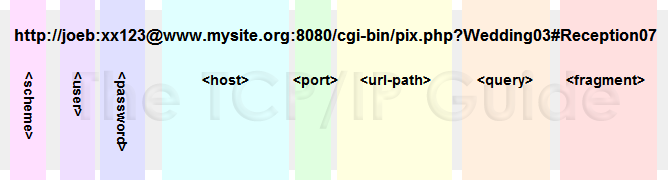

World Wide Web General
History and General
Hypertext and Hyperlinks
- Inspired by Ted Nelson's hypertext model
- Allowed for the creation of non-linear, interconnected documents
- Replaced traditional hierarchical document structures
HTTP (Hypertext Transfer Protocol)
-
is the fundamental protocol used for communication on the World Wide Web. It defines the rules and conventions for transmitting data, typically in the form of text, images, videos, links, and other media, between a web server and a web client, which is usually a web browser.
- Defined by Tim Berners-Lee as the protocol for the web.
- Specifies how web messages are formatted and transmitted
- Distributes web content
- Facilitates communication between web browsers and servers
HTML (Hypertext Markup Language)
- Became the primary document format for the web
- Used for structuring and formatting web content
- Evolved over time, with HTML5 enabling interactive and multimedia-rich web pages
URLs
Summary
- Stands for Uniform Resource Locator, aka. adress of the web
- They are used to refference web pages or file transfer
Components of a URL
Web Server
Summary
It is computer software and underlying hardware.
- Accepts HTTP Requests
- Processes Requests
- Retrieves Resources
- Generates Responses
- Sends Responses
- Handles Errors
- Enables Storage
- Manages Connections
- Handles Security
- Supports Application Protocols
- Scalability
Types of Web Servers:
The hardware used for a web server varies depending on the request volume.
This can range from small embedded systems, such as routers, to large setups with high-speed computers.
Static and Dynamic Content:
Resources sent by a web server can be pre-existing files (static content).
Static content can be served faster and cached for repeated requests.
Web servers can also generate content at the time of the request (dynamic content), often through interactions with other programs.
Dynamic content supports a wider range of applications.
Expanded Use of Web Servers:
Technologies like REST, SOAP, and WebDAV have extended the application of web servers beyond serving web pages.
They are now used for general computer-to-computer communication and support various extensions.
Web Client
Summary
It is an application for accessing websites and the Internet.
A web browser is a client.
- Renders HTML pages
- Requests new web content upon user request
- Proccesses HTTP responses
- Sends HTTP requests
- Interacts with web applications
- Maintains user session
- Resolves URLs
- Implements security
- Down and uploads files
- Supports user prefferences
HTTP
Summary
HTTP, or Hypertext Transfer Protocol, is a fundamental protocol used for communication on the World Wide Web. Here are some of the most important things to know about HTTP:
- Protocol for Web Communication: HTTP is a protocol used for transferring data and documents over the internet. It is the foundation for data communication on the World Wide Web.
- Stateless: HTTP is a stateless protocol, meaning each request from a client to a server is treated as an independent transaction. The server does not retain information about previous requests, making it simple and lightweight.
- Request-Response Model: It operates on a request-response model. A client, typically a web browser, sends an HTTP request to a server, and the server responds with the requested data. This data can be in the form of HTML web pages, images, text, or other media.
- Text-Based: HTTP messages are text-based, making them human-readable. This facilitates debugging and allows for easier development and inspection of requests and responses.
- Methods: HTTP defines several request methods, including GET (retrieve data), POST (submit data to be processed), PUT (update a resource), DELETE (remove a resource), and more. These methods determine the action to be taken on the resource.
- Status Codes: HTTP uses status codes in responses to indicate the result of a request. Common status codes include 200 (OK), 404 (Not Found), and 500 (Internal Server Error).
- Uniform Resource Locator (URL): URLs are used to identify resources on the web. An HTTP request includes the URL of the resource to be accessed.
- Headers: HTTP messages include headers that provide additional information about the request or response. Headers can include details like content type, encoding, authentication credentials, and caching directives.
- Versioning: HTTP has had multiple versions, with HTTP/1.1 being one of the most widely used versions. HTTP/2 and HTTP/3 are newer versions that offer performance improvements like multiplexing and reduced latency.
- Security: HTTPS (Hypertext Transfer Protocol Secure) is a secure version of HTTP that uses encryption to protect the data transmitted between the client and server. It is widely used for secure online transactions, such as e-commerce and online banking.
- Cookies: HTTP supports cookies, which are small pieces of data sent from a website and stored on a user's device. Cookies are used for various purposes, including session management and tracking user preferences.
- RESTful Services: HTTP is often used as the foundation for RESTful web services, which adhere to a set of architectural principles for building scalable and maintainable web applications.
- Web APIs: Many web services and APIs are accessed using HTTP. These APIs allow different software systems to communicate and exchange data over the internet.
- Client-Server Architecture: HTTP follows a client-server model, where clients (typically web browsers) make requests to servers that host resources. This architecture allows for scalability and the separation of concerns between clients and servers.
- Caching: HTTP supports caching mechanisms, which can improve performance by storing and reusing previously retrieved resources, reducing the need for repeated server requests.